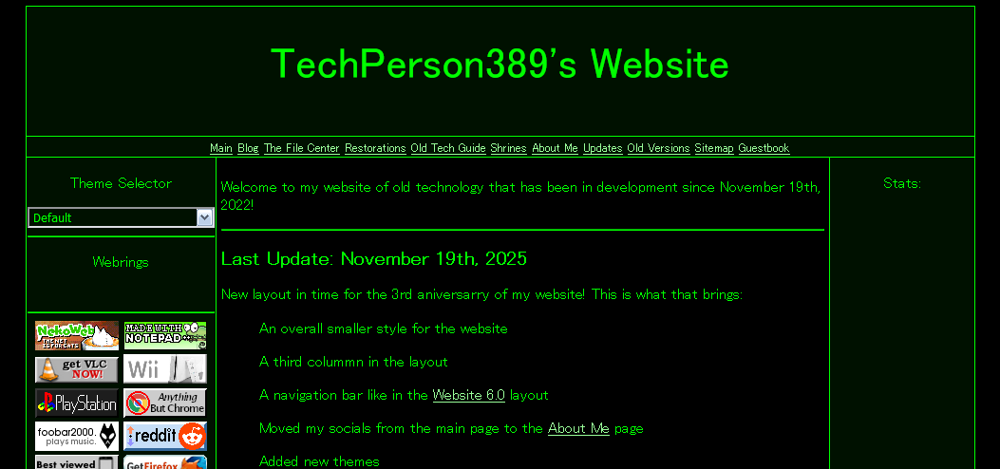

The TechPerson389 ArchiveMain Website |
||
|
Welcome to the extras section. This is where I put some fun extras, such as prototype builds and the like. |
||
Website 7.0 (Scrapped) Worked on between October 18th and October 24th of 2025 |
||